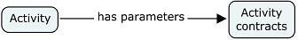

Activity |
An activity is a work unit with a work context. Applied to generation in EGF, an activity is a generation unit.
An activity defines a work unit in a software process. The purpose of EGF is to target automated activities. Factory component and task are examples of activities. This list is extensible. For instance, process could be a candidate of new activity.
An activity has a name, description and a set of contracts that represent the activity parameters. This basic structure is specialized afterward by activity subclasses, such as the factory component that contains viewpoints and an orchestration where activities can be called.

Figure 1. Activity structure